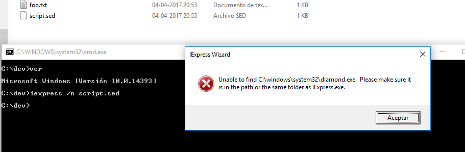

I not know all the story, seems that diamond.exe was renamed makecab.exe round 1997.
Anyways: diamond.exe support quantum compression until version 1.00.0530 (03/29/95), version 1.00.0540 (02/01/96) removed the feature.
I used this sed script for iexpress:
script.sed
Code: Select all
[Version]
Class=IEXPRESS
SEDVersion=3
[Options]
PackagePurpose=CreateCAB
ShowInstallProgramWindow=0
HideExtractAnimation=0
UseLongFileName=1
InsideCompressed=0
CAB_FixedSize=0
CAB_ResvCodeSigning=0
InsideCompressed=1
CompressionType=QUANTUM
RebootMode=I
InstallPrompt=%InstallPrompt%
DisplayLicense=%DisplayLicense%
FinishMessage=%FinishMessage%
TargetName=%TargetName%
FriendlyName=%FriendlyName%
AppLaunched=%AppLaunched%
PostInstallCmd=%PostInstallCmd%
AdminQuietInstCmd=%AdminQuietInstCmd%
UserQuietInstCmd=%UserQuietInstCmd%
SourceMediaLabel=%SourceMediaLabel%
SourceFiles=SourceFiles
[Strings]
InstallPrompt=
DisplayLicense=
FinishMessage=
TargetName=foo.cab
FriendlyName=IExpress Wizard
AppLaunched=
PostInstallCmd=
AdminQuietInstCmd=
UserQuietInstCmd=
SourceMediaLabel=Application Source Media
FILE0=foo.txt
[SourceFiles]
SourceFiles0=.
[SourceFiles0]
%FILE0%=
And run:
Code: Select all
iexpress.exe /n script.sed
I put diamond.exe in system32 folder and It create the cabinet with quantum compression.
Iexpress create a ddf file with directive, then it run diamond.exe /f file.ddf
If diamond.exe was renamed to makecab 20 years ago, and take off the quantum compression method, is interesting the message of iexpress.exe. Anyways it works if you provide the diamond.exe.
I found diamond.exe in the attached file MCABIN10.ZIP here:
Code: Select all
http://www.msfn.org/board/topic/149063-requesting-windows-95-updates-tools-etc/#comment-951929